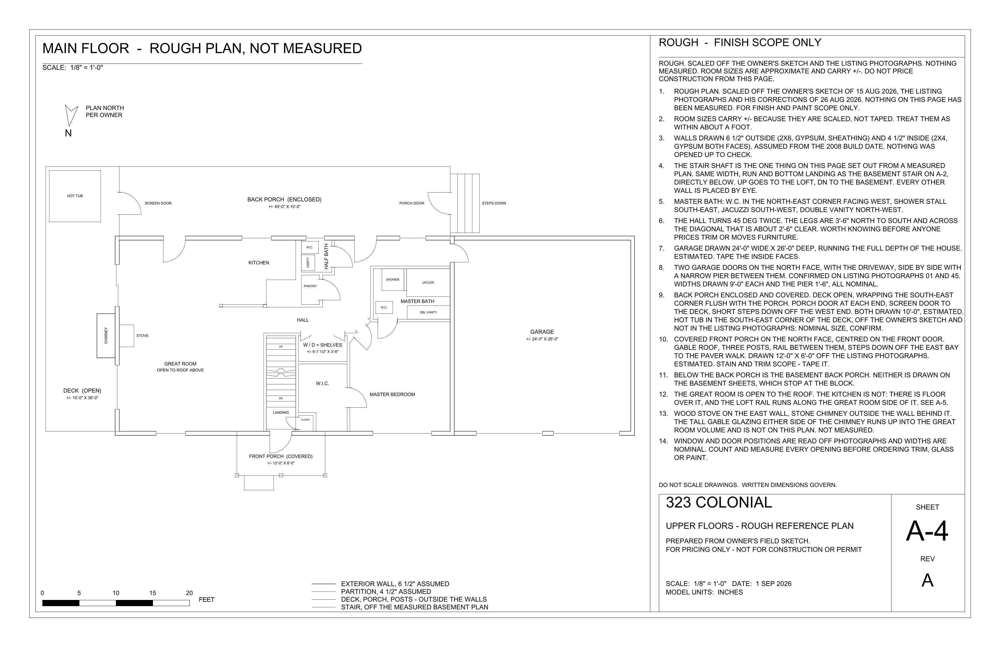
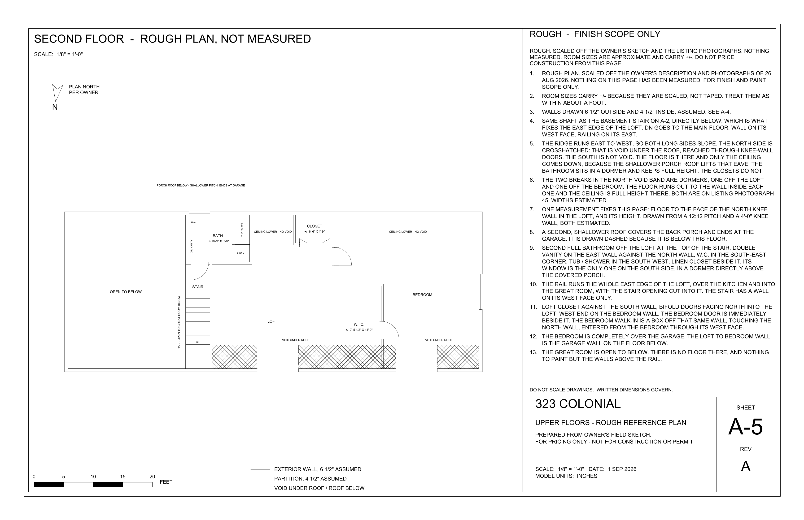

Buyer reference · Orientation and pricing only
Floor plans
Rough main- and second-floor plans derived from a sketch and prior photographs. Nothing shown is field-measured.

Actual property · Current condition
See the rooms before reading the drawings
Photography shows the house as it stood for the prior listing. The sheets below are secondary orientation aids, not a substitute for walking and measuring the property.
Main floor
Sheet A-4 · Master suite, great room, kitchen and dining, half bath, laundry, screened porch, deck and garage.

Second floor
Sheet A-5 · Bedroom over the garage with walk-in closet, loft open to the great room, upstairs bath and roof voids.

Lower-level planning set
The full CAD set that conveys with the house includes existing conditions, a proposed basement finish with two bedrooms, jack-and-jill bath, den and flex room, schedules and fourteen trade sheets. It remains planning and pricing information only.
Walk the plan in person
Request property information or arrange a showing.
realtor@stevenhay.com